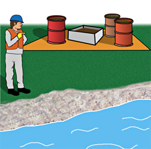

MELLOMLAGER
Mellomlagring er en midlertidig sikker lagring av oljeholdig avfall i påvente av videre transport.
Det er viktig at mellomlagringsstedet velges slik at det blir enklest mulig å transportere den oljeholdige massen bort (tenk infrastruktur), og at det ikke er så nært sjøen at flo eller bølger kan rekke opp.Så snart en strandsaneringsaksjon er satt i gang vil det raskt opparbeides relativt mye oljeholdig avfall. Velg derfor passende steder for mellomlagring før saneringsaksjonen begynner.
På stedet hvor en velger å mellomlagre oljeholdig avfall legges det først ut en presenning for å forhindre avrenning fra den oppsamlede massen til grunnen.
Videre plasseres massen atskilt etter 1., 2. og 3. prioritet
Har en tanker / fat for flytende oljemasse, bør disse plasseres slik at drenering av vann er mulig.
